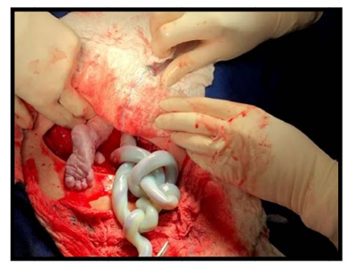
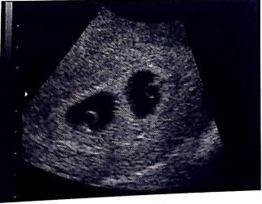
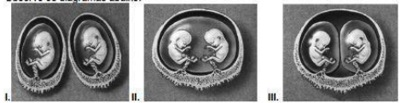
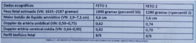

Questão 1 · Obstetrícia · Gestação múltipla gestação gemelar · 4000184132Gestante de 28 anos, 2G:1PN:0A, encontra-se internada na enfermaria de alto risco por gestação gemelar dicoriônica- diamniótica e perda de líquido amniótico há 4 dias. Hoje, 33 semanas e 4 dias de gestação, o primeiro gemelar está em apresentação pélvica e pesa 1.405 g, o segundo gemelar está em apresentação cefálica e pesa 1.712 g. A paciente queixa-se de dor em baixo ventre. Ao exame clínico PA 110x74 mmHg, FC 82 bpm, BCF de ambos presentes e rítmicos, dinâmica uterina de 2 contrações fracas em 10 minutos. Ao toque colo fino, pérvio para 3 cm. Qual é a conduta obstétrica?
A Parto cesáreo de urgência.
B Condução de trabalho de parto.
C Butil brometo de escopolamina e reavaliação.
D Inibição de trabalho de parto prematuro.
Questão 2 · Obstetrícia · Gestação múltipla gestação gemelar · 4000183619Primigesta, gemeligesta dizigótica, 36 semanas, em trabalho de parto com 6 cm de dilatação. O primeiro feto está em AEA e o segundo em OEA. Ambos têm peso estimado ao redor de 2.600 g. Indica-se
A aguardar o parto vaginal.
B extração podálica do segundo gemelar após o nascimento do primeiro.
C amniotomia e versão interna do primeiro gemelar.
D extração podálica do primeiro gemelar.
E cesárea.
Questão 3 · Obstetrícia · Gestação múltipla gestação gemelar · 4000183222A respeito da gestação múltipla, assinale a alternativa correta.
A O risco de prematuridade e
B Nas gestações dicorio
C A síndrome da transfusão feto-fetal é uma complicação das gestações múltiplas dicoriônicas decorrente do desequilíbrio das comunicações vasculares placentárias entre os fetos.
D A corionicidade e
E O óbito de um dos fetos nas gestações dicorio
Questão 4 · Obstetrícia · Gestação múltipla gestação gemelar · 4000181841O acompanhamento e a conduta nas gestações gemelares baseiam-se fundamentalmente no tipo de corionicidade, quando as gestações
A dicoriônicas apresentam duas placentas e uma cavidade monoamniótica.
B monocoriônicas diamnióticas apresentam uma placenta e duas cavidades amnióticas.
C monocoriônicas monoamnióticas apresentam duas placentas e duas cavidades amnióticas.
D monocoriônicas monoamnióticas com fetos unidos apresentam duas placentas e uma cavidade amniótica.
Questão 5 · Obstetrícia · Gestação múltipla gestação gemelar · 4000181264P.L.S., 37 anos, primigesta, IG cronológica de 7 semanas e 6 dias, veio para o primeiro exame de ultrassom nesta gestação. Identificada imagem uterina, conforme figura a seguir. De acordo com a imagem, assinale o diagnóstico correto.

A Gestação única.
B Gestação gemelar dicoriônica e diamniótica.
C Gestação gemelar dicoriônica e monoamniótica.
D Gestação gemelar monocoriônica e diamniótica.
E Gestação gemelar monocoriônica e monoamniótica.
Questão 6 · Gestação múltipla gestação gemelar · 4000191029Com relação à gemelidade, assinale a alternativa correta.
A A gemelidade dizigótica ocorre ao acaso e tem uma frequência de 1 para 200 casos.
B A tendência familiar refere-se aos casos de gemelidade monozigótica.
C A síndrome de transfusão feto-fetal acomete tanto as gestações monozigóticas como as dizigóticas, na dependência da corionicidade.
D Nos casos de síndrome de transfusão feto-fetal, uma observação que corrobora no diagnóstico é o encontro de bexiga vazia em um dos fetos e de bexiga cheia no outro.
E Com uso de corticoide e betamiméticos, a prematuridade deixou de ser um problema na gemelidade.
Questão 7 · Obstetrícia · Gestação múltipla gestação gemelar · 4000173558Gestante com 40 anos, primípara, na 36ª semana de gestação, a qual começou o pré-natal no 1° trimestre que revelou tratar-se de uma gestação gemelar e mostrava placenta única e ausência de membrana divisória entre os fetos. Foi orientada a marcar o pré-natal de alto risco, porém não conseguiu agendar. Realizou mais duas consultas na unidade básica de saúde (UBS) com exames pré-natais todos normais. Chega à maternidade referindo dores em baixo ventre e perda de muco pela vagina. Ao toque vaginal, o colo uterino dilatado de 5cm, apagamento 90%, feto cefálico, xo em OEA e, durante o exame, a bolsa rompeu com líquido claro e grumos. Dinâmica uterina: 3 contrações/10 minutos/40 segundos. Batimentos cardiofetais de F1 em QIE 144bpm e de F2 ao nível da cicatriz umbilical à direita 152bpm. Sobre esse quadro, assinale a alternativa CORRETA.
A Trata-se de uma gestação monocoriônica monoamniótica em trabalho de parto prematuro, sendo necessária uma cesariana.
B Trata-se de uma gestação monocoriônica monoamniótica em trabalho de parto prematuro e rotura prematura das membranas, sendo necessária uma cesariana.
C Trata-se de uma gestação monocoriônica monoamniótica em trabalho de parto prematuro, devendo ser aguardado o trabalho de parto vaginal.
D Trata-se de uma gestação monocoriônica diamniótica em trabalho de parto prematuro e rotura prematura das membranas, sendo necessária uma cesariana.
E Trata-se de uma gestação monocoriônica diamniótica em trabalho de parto prematuro, devendo ser aguardado o trabalho de parto vaginal.
Questão 8 · Obstetrícia · Gestação múltipla gestação gemelar · 4000169436Uma gestante de 26 anos de idade compareceu à consulta pré-natal na seção de obstetrícia do Hospital do Servidor Público Estadual (HSPE), levando consigo exame ultrassonográ co, que revelava a presença de dois fetos, co m comprimento cabeça-nádegas (CCNs) sugestivo de gestação gemelar de onze semanas, e evidenciava o sinal de lambda. Com base nesse caso hipotético, é correto afirmar que
A existe alto risco de feto acárdico.
B há alto risco de síndrome de transfusão feto-fetal.
C se trata de gravidez gemelar dizigótica.
D a clivagem do zigoto, caso a gestação gemelar seja monozigótica, provavelmente ocorreu entre o 8º e o 10º dia após a fecundação.
E a clivagem do zigoto, caso a gestação gemelar seja monozigótica, provavelmente ocorreu entre o 1º e o 3º dia após a fecundação.
Revisar: possível letra faltando em enunciado
Questão 9 · Obstetrícia · Gestação múltipla gestação gemelar · 4000166884A determinação da corionicidade de gestação gemelar é muito importante na assistência pré-natal e a ultrassonogra a é o método de escolha para esta definição. O sinal de lambda e o encontro das membranas na placenta são, respectivamente, marcadores da gestação gemelar
A dicoriônica e monoamiótica.
B dicoriônica e diamniótica.
C monocoriônica e diamniótica.
D monocoriônica e monoamniótica.
Questão 10 · Gestação múltipla gestação gemelar · 4000165122Os gêmeos representam cerca de 2,5% dos nascimentos e aproximadamente 15% dos nascidos com peso extremamente baixo. Os problemas da gestação gemelar incluem polidrâmnio, pré-eclâmpsia, apresentações anormais e parto prematuro. Sobre esta situação selecione a opção correta. I – Gêmeos de tamanho muito diferente geralmente são monocoriônicos. II – Apesar de gêmeos monocoriônicos apresentarem uma mortalidade perinatal significativamente mais elevada, não existe diferença significativa entre a taxa de mortalidade neonatal de partos de gêmeos e de parto único em grupos comparáveis quanto ao peso e idade gestacional. III – O parto eletivo de gêmeos na 37 semana reduz a taxa de complicação para os fetos e suas mães.
A As afirmativas I e II são verdadeiras. A afirmativa III é falsa.
B As afirmativas I e III são verdadeiras. A afirmativa II é falsa.
C As afirmativas II e III são verdadeiras. A afirmativa I é falsa.
D As afirmativas I, II e III são verdadeiras.
E As afirmativas I, II e III são falsas.
Questão 11 · Obstetrícia · Gestação múltipla gestação gemelar · 4000164519Relacione a Coluna 1 à Coluna 2, associando o tipo de placentação da gemelaridade à linha de tempo em que ocorre. Coluna 1 A. Dicoriônica/diamniótica. B. Monocoriônica/diamniótica. C. Monocoriônica/monoamniótica. Coluna 2 ( ) Entre os dias 1 e 3. ( ) Entre os dias 3 e 8. ( ) Entre os dias 8 e 13. A ordem correta de preenchimento dos parênteses, de cima para baixo, é
A A – B – C.
B B – C – A.
C C – A – B.
D C – B – A.
Questão 12 · Gestação múltipla gestação gemelar · 4000163718Gestante de 34 anos, G1P0A0, realizou fertilização in vitro, comparece à segunda consulta de pré-natal com ultrassom revelando gestação gemelar dicoriônica no curso da 8ª semana. Qual das a rmativas não é verdadeira em relação a esta gestação?
A 70-75% das gestações gemelares são dizigóticas, sendo estas dicoriônicas e diamnióticas em 100% dos casos.
B O seguimento pré-natal desta gestação deve ser realizado de forma mensal, até a 28ª semana, a cada 2-3 semanas a partir da 28ª semana e, semanal, a partir da 36ª semana.
C Após a prematuridade, a complicação mais frequente da gravidez gemelar dicoriônica é a síndrome da transfusão feto fetal (STFF), sendo importante causa de morbimortalidade perinatal.
D O rastreamento ultrassonográfico da gestação gemelar dicoriônica, se faz entre a 11ª e 14ª semana para datação e rastreamento de cromossomopatias e entre a 20ª e 22ª semana para avaliação detalhada da anatomia fetal e comprimento do colo. Após a 24ª semana, realiza-se a cada 30 dias para avaliar o crescimento, o líquido amniótico e doppler fetal.
Questão 13 · Síndrome da transf usão f etof etal STFF · 4000185163Gestac de dopplervelocimetria esta A imagem a seguir representa um dos fetos. Considerando a siopatologia dessa si

A Doador, que recebe sangue pelas anastomoses placenta
B Doador, com oligohidra
C Receptor, com polidra
D Receptor, com insu cie
Questão 14 · Prevalência e epidemiologia · Obstetrícia · 4000152020Em relação à gestação gemelar, analise as assertivas abaixo: I. A mortalidade fetal e neonatal está aumentada, assim como há maior risco de paralisia cerebral quando comparada à gestação única. II. A morbidade e mortalidade materna são elevadas na gravidez gemelar. III. A probabilidade de gestação gemelar diminui com a idade materna.
A Apenas I e II.
B Apenas I e III.
C Apenas II e III.
D I, II e III
E Apenas III
Questão 15 · Determinação da corionicidade e amnionicidade · Obstetrícia · Tipos de gestações múltiplas · 4000151940sobre as gestações gemelares monocoriônicas e diamnióticas, é correto afirmar que:
A Os fetos podem apresentar sexos iguais ou diferentes.
B Não há risco de síndrome da transfusão feto-fetal, pois cada feto tem sua cavidade amniótica.
C A gestação é obrigatoriamente monozigótica.
D Há risco de gemelaridade conjugada se a clivagem do embrião ocorrer depois do 13º dia de fecundação.
E É possível identificar esse tipo de gestação pelo ultrassom, quando se identifica o sinal do lambda na ultrassonografia do primeiro trimestre.
Questão 16 · Determinação da corionicidade e amnionicidade · Obstetrícia · Tipos de gestações múltiplas · 4000147306Primigesta, 22 semanas, vem realizar ultrassonogra a que evidencia gestação gemelar com feto 1 apresentando polidrâmnio e peso estimado de 550 g e feto 2 apresentando oligoâmnio e peso estimado de 380 g. Baseado nessas informações indique qual é a zigosidade, corionicidade e provável hipótese diagnóstica
A Dizigótica, dicoriônica, restrição de crescimento seletiva
B Monozigótica, monocoriônica, síndrome da transfusão fetofetal.
C Monozigótica, monocoriônica, restrição de crescimento seletiva.
D Dizigótica, monocoriônica, síndrome da transfusão feto-fetal.
E Monozigótica, dicoriônica, síndrome da transfusão feto-fetal.
Questão 17 · Gestação múltipla gestação gemelar · 4000147046Após ultrassom de primeiro trimestre, uma gestante tem como diagnóstico uma gestação múltipla dicoriônica e diamniótica. Diante dessa situação, é correto afirmar que
A gêmeo arcádico é uma complicação possível.
B o risco de malformação é sempre o mesmo para os fetos.
C o sinal do lambda é observado somente na gestação monocoriônica.
D pode ter como complicação a síndrome da transfusão feto-fetal.
E pode ser monozigótica ou dizigótica.
Questão 18 · Obstetrícia · Prénatal · Gestação múltipla gestação gemelar · 4000146451Uma mulher – que já teve 2 partos vaginais, sendo um deles gemelar, 2 cesáreas, sendo que, numa cesárea, o feto nasceu morto – agora está grávida de gêmeos novamente. A representação é
A V-gesta IV-para.
B V-gesta V-para.
C VII-gesta V-para.
D VII-gesta III-para 1 natimorto.
E V-gesta III-para 1 natimorto.
Questão 19 · Def inição · Diagnóstico · Obstetrícia · 4000146339A partir da a rmativa: “duas vesículas vitelínicas e dois embriões em um saco gestacional”, assinale a corionicidade dessa gestação gemelar e em que período essa condição pode ser detectada, respectivamente.
A Monocoriônica; na quarta semana de idade gestacional.
B Monocoriônica; na quinta semana de idade gestacional.
C Monocoriônica; na sexta semana de idade gestacional.
D Dicoriônica; entre a quarta e a quinta semanas de idade gestacional.
E Dicoriônica; entre a sexta e a sétima semanas de idade gestacional.
Questão 20 · Diagnóstico · Obstetrícia · Tipos de gestações múltiplas · 4000146273O sinal ultrassonográfico do T invertido em gestações gemelares geralmente é encontrado em
A Monocoriônica / Diamniótica.
B Monocoriônica / Monoamniótica.
C Dicoriônica / Diamniótica.
D Gêmeos unidos.
Questão 21 · Def inição · Obstetrícia · Tipos de gestações múltiplas · 4000146120A gestação gemelar é dita monocoriônica quando os fetos
A dividem uma placenta.
B se originam de um óvulo.
C dividem a mesma cavidade amniótica.
D têm placentas separadas.
Questão 22 · Obstetrícia · Gestação múltipla gestação gemelar · 4000144692Em relação às gestações gemelares, pode-se dizer que:
A as monozigóticas podem ser discordantes quanto ao sexo.
B as dizigóticas podem ser monocoriônicas.
C as monozigóticas podem ser dicoriônicas.
D as dizigóticas são mais frequentesno início da vida reprodutiva da mulher.
Questão 23 · Complicações · Prematuridade · Gestação monoamniótica · 4000141170Primigesta de 34 semanas, sem pré-natal, chega à maternidade com quadro de sangramento vaginal intenso. Exame obstétrico: altura uterina: 39 cm; toque: colo fechado e com apresentação inatingível. Submetida a cesárea de urgência. A foto apresenta um momento do intraparto: A CONDIÇÃO APRESENTADA NA FOTO ESTÁ ASSOCIADA À GESTAÇÃO:

A Gemelar monocoriônica e monoamniótica.
B Pré-termo complicada por rotura de vasa prévia.
C Gemelar monocoriônica e diamniótica.
D Pré-termo com polidrâmnio e prolapso de cordão.
Questão 24 · Obstetrícia · Gestação múltipla gestação gemelar · 4000141035Em uma gestação gemelar dicoriônica e diamniótica, a avaliação ultrassonográ ca da quantidade normal de líquido amniótico será mais bem definida quando o
A índice de líquido amniótico (ILA) for maior que 3 cm em ambas as cavidades amnióticas.
B índice de líquido amniótico (ILA) for maior que 8 cm em uma das cavidades amnióticas.
C índice de líquido amniótico (ILA) for maior que 10 cm em ambas as cavidades amnióticas.
D maior bolsão (MB) de líquido amniótico for maior que 2 cm em ambas as cavidades amnióticas.
E maior bolsão (MB) de líquido amniótico for maior que 5 cm em ambas as cavidades amnióticas.
Revisar: possível letra faltando em enunciado
Questão 25 · Obstetrícia · Gestação múltipla gestação gemelar · 4000139836Paciente de 27 anos, primigesta, 7 semanas de gestação, apresenta à ultrassonogra a obstétrica transvaginal saco gestacional (SG) único, tópico, sem sinais de descolamento. No interior do SG, observam-se dois embriões com batimentos cardíacos presentes. Em relação a esse caso de gestação múltipla, é correto afirmar:
A A ultrassonografia realizada pela paciente permite determinar a zigosidade e corionicidade da gestação, não sendo ainda possível afirmar a amniocidade.
B Se a gestação dessa paciente for monocoriônica, é importante afastar o diagnóstico de síndrome da transfusão feto-fetal na ultrassonografia transvaginal do primeiro trimestre.
C A ausência do sinal do lambda à ultrassonografia demonstra que os fetos não serão necessariamente do mesmo sexo.
D A paciente deve apresentar gestação monocoriônica e monoamniótica, uma vez que o âmnio já seria visível à ultrassonografia desde a quinta semana de gestação.
E A paciente apresenta gestação dicoriônica e diamniótica, esperando-se que o "sinal do T" apareça na ultrassonografia de 12 semanas.
Questão 26 · Assistência ao parto na gestação multipla · Acompanhamento prénatal · Obstetrícia · 4000138367Avalie as assertivas I, II e III e assinale a alternativa correta sobre o momento da interrupção de uma gestação gemelar não complicada: I. Dicoriônica / diamniótica: 37-38 semanas II. Monocoriônica/ diamniótica: 34-36 semanas. III. Monocoriônica/ monoamniótica: 32-34 semanas.
A Apenas I e II estão corretas.
B Apenas I e III estão corretas.
C Apenas II e III estão corretas.
D I, II e III são incorretas.
E I, II e III são corretas.
Questão 27 · Def inição · Obstetrícia · Tipos de gestações múltiplas · 4000137473Sobre a gravidez gemelar monozigótica, sabe-se que em 30% dos casos ela é dicoriônica e diamniótica. Pode-se afirmar, portanto, que nesses casos a divisão do ovo se deu entre:
A 8º e 13º dia.
B 13º e 21º dia.
C 1º e 3º dia.
D 3º e 8º dia.
Questão 28 · Complicações · Obstetrícia · 4000133758O conhecimento adequado da corionicidade e amniocidade é fundamental para o acompanhamento das gestações gemelares, já que existem algumas complicações que são singulares e específicas ao tipo de gestação gemelar. Dessa forma, uma complicação específica da gravidez monoamniótica é:
A morte unifetal .
B gêmeo acolado.
C crescimento fetal discordante.
D síndrome de transfusão feto-fetal .
Questão 29 · Assistência ao parto na gestação multipla · Obstetrícia · 4000129805Secundigesta de 34 semanas, com parto normal anterior, agora com gestação gemelar diamniótica e monocoriônica, procura a maternidade com queixa de contrações. Ao exame, dinâmica presente, colo dilatado em 6 cm, esvaecido 50%, medianizado, com primeiro gemelar cefálico. Exame de ultrassonografia realizado na admissão identifica o primeiro gemelar cefálico, pesando 2500 kg, e o segundo gemelar, transverso, pesando 2100 g.
A Realizar cesariana imediata.
B Tocólise para permitir a corticoterapia.
C Tentar realizar a versão fetal externa do segundo gemelar, para permitir o parto vaginal.
D Parto vaginal com extração podal do 2° feto se necessário.
E Sulfato de magnésio antes de realizar a cesariana.
Questão 30 · Assistência ao parto na gestação multipla · Prevalência e epidemiologia · 4000129397Em relação à gestação gemelar, analise as assertivas abaixo: I. A mortalidade fetal e neonatal está aumentada, assim como há maior risco de paralisia cerebral quando comparadas à gestação única. II. A morbidade e a mortalidade materna são elevadas na gravidez gemelar. III. A probabilidade de gestação gemelar diminui com a idade materna. Quais estão corretas?
A Apenas I e II.
B Apenas I e III.
C Apenas II e III.
D I, II e III.
Questão 31 · Determinação da corionicidade e amnionicidade · Obstetrícia · 4000129208Assinale a assertiva correta sobre gestação gemelar e avaliação por ultrassonografia (US).
A A US realizada entre a 11ª e a 13ª semanas mais 6 dias é a mais adequada para definir a corionicidade e estimar o risco de alterações cromossômicas.
B A presença do sinal de lambda define gestação gemelar monocoriônica.
C A presença de apenas um saco gestacional com dois embriões à US realizada com 8 semanas indica gestação gemelar crônica dicoriônica monoamniótica.
D O seguimento da gestação gemelar dicoriônica por US é mais frequente do que o da monocoriônica.
Questão 32 · Síndrome da transf usão f etof etal STFF · 4000119935Primigesta, 42 anos de idade, gestação gemelar pós-fertilização, 25 semanas de gestação, com diagnóstico de síndrome de transfusão gêmelo-gemelar, estágio III de Quintero. Qual o melhor tratamento indicado?
A Amniodrenagem.
B Interrupção da gestação por cesárea.
C Laser-coagulação fetoscópica das anastomoses vasculares.
D Anticoagulação plena.
E Cordocentese.
Questão 33 · Síndrome da transf usão f etof etal STFF · 4000119622Paciente de 32 anos de idade encontra-se na 32ª semana de gestação gemelar. Ao realizar ultrassonogra a, constatou-se que uma cavidade amniótica apresentava polidramnio e a outra oligoâmnio. Ambos os fetos estavam ativos e com peso no percentil 30. A hipótese diagnóstica mais provável para esse achado é?
A Transfusão feto-fetal.
B Cromossomopatia.
C Infecção congênita.
D Malformação fetal.
Questão 34 · Gestação múltipla gestação gemelar · 4000115116Grávida, com idade gestacional estimada de 27 semanas, comparece em consulta trazendo exame de ultrassonogra a obstétrica compatível com gestação gemelar, monocoriônica, com placenta anterior, Grau 0 de Grannun; Feto 1- apresentação cefálica, coração de morfologia habitual, estômago bem caracterizado, bexiga sem alterações detectáveis, genitália externa compatível com sexo feminino, batimentos cardíacos rítmicos com frequência de 145bpm, peso fetal estimado em 630g segundo Hadlock, volume normal de líquido amniótico avaliado pela medida do maior bolsão. A avaliação dopplervelocimétrica da artéria umbilical apresenta oscilação entre diástole zero e reversa; Feto2- apresentação pélvica, coração de morfologia habitual, estômago bem caracterizado, bexiga sem alterações detectáveis, genitália externa compatível com sexo feminino, batimentos cardíacos rítmicos com frequência de 148 bpm, peso fetal estimado de 1150g segundo Hadlock, volume normal de líquido amniótico avaliado pela medida do maior bolsão; sem alterações demonstráveis na avaliação dopplervelocimétrica. Embasados nessas informações, a zigoticidade, amniocidade e o diagnóstico prováveis são:
A gestação dizigótica, diamniótica e Síndrome de transfusão feto-fetal (STFF).
B gestação monozigótica, diamniótica e Síndrome de transfusão feto-fetal (STFF).
C gestação dizigótica, diamniótica e Restrição de crescimento intrauterino seletivo dofeto 1.gestação dizigótica, monoamniótica e sequência de anemia-policitemia.
D gestação dizigótica, monoamniótica e sequência de anemia-policitemia.
E gestação monozigótica, diamniótica e Restrição de crescimento intrauterino seletivo dofeto 1.
Questão 35 · Assistência ao parto na gestação multipla · 4000114296Considera-se como termo na gestação gemelar:
A dicoriônica: 38 semanas
B monocoriônica: 40 semanas
C monoamniótica: 37 semanas
D diamniótica: 41 semanas
Questão 36 · Complicações · 400011398926 anos, G2P1A0 (1 parto normal anterior a termo sem intercorrências) 14 semanas de gestação gemelar dicoriônica, comparece à consulta para iniciar pré-natal. Antecedentes pessoais nega patologias e refere gravidez espontânea. Ao exame: peso: 92 kg, estatura 1,65 cm, bom estado geral com pressão arterial: 105 x 72 mmHg. Altura uterina de 16 cm, ausculta fetal do feto A de 142 bpm e do feto B de 156 bpm. Qual a conduta medicamentosa adequada?
A AAS e enoxaparina.
B AAS isoladamente.
C Enoxaparina e cálcio.
D AAS e cálcio.
Questão 37 · Acima de 34 semanas · Gestação múltipla gestação gemelar · 4000111112G2P1N, gestação gemelar dicoriônica/diamniótica, idade gestacional de 30 semanas, sem complicações até o momento. Procura o pronto-socorro com queixa de dores tipo contração. Ao exame: BEG, afebril, PA 130 x 80 mmHg, pulso 100 bpm, AU de 34 cm, DU presente 2/30”/10`, tônus normal, BCF 144 e 150 bpm, TV com colo 70% esvaecido, 4 cm, bolsa íntegra, primeiro feto pélvico, alto e móvel. Assinale a alternativa que apresenta a melhor conduta.
A Reavaliar em 2 horas para confirmar diagnóstico de trabalho de parto prematuro.
B Internação, corticoprofilaxia com betametasona em dose dobrada e hiper-hidratação.
C Internação, optar pela cesariana devido à gemelaridade com primeiro feto não cefálico.
D Inibição do trabalho de parto com terbutalina, hiper-hidratação e antibioticoprofilaxia.
E Inibição do trabalho de parto com nifedipina, corticoprofilaxia e antibioticoprofilaxia.
Questão 38 · Tipos de gestações múltiplas · 4000107951Paciente, M.S.P., 32 anos, chega à consulta pré-natal com idade gestacional de 10 semanas, considerando-se a data da última menstruação. Sem queixas. Refere gestação espontânea. Exame ultrassonográ co realizado no dia anterior a essa consulta mostra gestação gemelar de 10 semanas, pela medida do comprimento cabeça-nádega (CCN), com dois embriões, estando cada um deles em um saco gestacional independente. Com base exclusivamente nas informações fornecidas, é CORRETO afirmar que se trata, obrigatoriamente, de gestação
A dizigótica e dicoriônica.
B monozigótica e dicoriônica.
C monozigótica e monocoriônica.
D dicoriônica e diamniótica.
E dicoriônica e monoamniótica.
Revisar: possível letra faltando em enunciado
Questão 39 · Introdução · 4000106077Em gestação gemelar, as monocoriônicas /monoamnióticas tem uma frequência de aproximadamente:
A 1 a 2%.
B 10 a 15%.
C 20 a 25%.
D 50 a 60%.
Questão 40 · Complicações · 4000103814Sobre as gestações gemelares, é correto afirmar:
A Há aumento do risco de complicações gestacionais, como a pré-eclâmpsia e a hiperêmese gravídica.
B Toda gestação gemelar dicoriônica/diamniótica é obrigatoriamente dizigótica.
C A Síndrome de Transfusão Feto-Fetal ocorre em gestações gemelares dicoriônicas.
D O parto vaginal está contraindicado em todos os casos.
Questão 41 · Tipos de gestações múltiplas · 4000103729Gersilia, de 29 anos, ao realizar exame de ultrassonogra a obstétrica, descobre que está grávida de gêmeos. O ultrassonogra sta lhe informou que são duas placentas e duas bolsas. Ela chega à consulta de pré-natal o questionando se tratam-se de gêmeos idênticos ou não., qual orientação você deve fornecer a dona Gersilia?
A Como se trata de uma gestação dicoriônica diamniótica, eles não são gêmeos idênticos, caso seus sexos sejam diferentes.
B Como se trata de uma gestação dicoriônica diamniótica, eles não são gêmeos idênticos.
C Como se trata de uma gestação dicoriônica diamniótica, eles são gêmeos idênticos.
D Como se trata de uma gestação dicoriônica diamniótica, eles são gêmeos idênticos se seus sexos forem iguais
Questão 42 · Assistência ao parto na gestação multipla · 4000093606Assinale a alternativa correta sobre a gestação gemelar monocoriônica e diamniótica.
A Não é possível o parto vaginal, caso o segundo feto estiver transverso.
B Deve ser interrompida com uma cesariana, após as 37 semanas.
C Deve ser indicado cerclagem, pelo risco maior de prematuridade.
D Deve ser interrompida entre 32 a 34 semanas, pelo risco de transfusão feto-fetal aguda.
E Pode ser induzida com o uso de misoprostol vaginal.
Questão 43 · Acompanhamento prénatal · 4000084303Em gestações gemelares espontâneas, o parâmetro mais aceito para a datação da idade gestacional é:
A o maior diâmetro biparietal de um dos gemelares no início do 2º trimestre
B o menor diâmetro biparietal de um dos gemelares no início do 2º trimestre
C o maior comprimento cabeça nádega de um dos gemelares no 1º trimestre
D o menor comprimento cabeça nádega de um dos gemelares no 1º trimestre
Questão 44 · Determinação da corionicidade e amnionicidade · 4000084292Sobre a incidência de gravidez gemelar é correto afirmar que:
A a dizigótica aumenta com a idade
B a dizigótica é relativamente constante
C a monozigótica sofre influência de fatores raciais e familiares
D a monozigótica apresenta aumento marcante após fertilização in vitro
Questão 45 · Gestação monoamniótica · Gêmeos conjugados · 4000073202Quando consideramos a corionicidade e a amniocidade a gemelidade imperfeita é sempre:
A Dicoriônica e diamniótica.
B Monozigótica e diamniótica.
C Monocoriônica e monoamniótica.
D Dizigótica e monoamniótica.
E Monocoriônica e diamniótica.
Questão 46 · Assistência ao parto na gestação multipla · 4000070451Sobre as gestações gemelares, assinale a alternativa verdadeira:
A A conduta nas restrições de crescimento é semelhante nas monocoriônicas e dicoriônicas.
B Nas gestações monocoriônicas não complicadas, recomenda-se a antecipação do parto para 36-37 semanas.
C A incidência de prematuridade é menor nas monocoriônicas.
D As restrições de crescimento são mais frequentes nas dicoriônicas.
E Nas gestações gemelares dicoriônicas, os gêmeos são sempre geneticamente diferentes.
Questão 47 · Determinação da corionicidade e amnionicidade · Tipos de gestações múltiplas · 4000069249Sobre gestação gemelar assinale a alternativa falsa:
A 100% das gestações dizigóticas são dicoriônicas e diamnióticas.
B 70% a 75% das gestações gemelares são monozigóticas e 20% a 25% são dicoriônicas.
C As principais complicações da gravidez dicoriônica são prematuridade e a restrição de crescimento.
D Na gravidez monocoriônica as complicações mais frequentes são síndrome da transfusão feto- fetal e restrição de crescimento intrauterino seletivo.
E A mortalidade materna é 2,5 vezes maior do que na gestação única.
Questão 48 · Síndrome da transf usão f etof etal STFF · 4000064299Sobre a gestação gemelar, é CORRETO afirmar que
A a gestação dicoriônica e diamniótica deve ser conduzida como a gravidez única já que não tem risco aumentado de complicações.
B a prematuridade é complicação frequente na gestação gemelar, por isso deve ser usado progesterona vaginal em todos os casos.
C a síndrome de transfusão feto-fetal deve ser rastreada entre 16 e 26 semanas em toda gravidez monocoriônica e diamniótica.
D a cerclagem é procedimento obrigatório nas gestações trigemelares.
E quando o sexo dos fetos é igual, pode-se afirmar que se trata de uma gestação monozigótica.
Questão 49 · Determinação da corionicidade e amnionicidade · 4000063500Em relação a gestações gemelares, referindo-se à zigotia, corionicidade e amnionicidade, qual das seguintes situações abaixo é impossível:
A Monozigótico, monocoriônico, diamniótico.
B Monozigótico, dicoriônico, diamniótico.
C Monozigótico, dicoriônico, monoamniótico.
D Monozigótico, monocoriônico, monoamniótico.
E Dizigótico, dicoriônico, diamniótico.
Questão 50 · Gêmeos conjugados · 4000062095Paciente gestação gemelar 31 anos, G5 P2 A2. O ultrassom morfológico com 22 semanas mostra gêmeos com biometria de 21 semanas e fusão em região torácica anterior. Ela não tem doenças pregressas, e os exames físico e laboratoriais de rotina pré-natal são normais. É CORRETO afirmar que essa gravidez gemelar é um caso de gemelidade:
A Imperfeita do tipo xifópagos e ocorre em casos de gêmeos monocoriônicos e monoamnióticos.
B Imperfeita do tipo onfalópagos e ocorre em casos de gêmeos monocoriônicos e monoamnióticos.
C Imperfeita do tipo xifópagos e ocorre em casos de gêmeos monocoriônicos e diamnióticos.
D Monoamniótica, com gêmeos acolados tipo onfalópagos.
Questão 51 · Determinação da corionicidade e amnionicidade · 4000046475Nas gestações monocoriônicas e monoamnióticas, a divisão do ovo ocorre:
A do terceiro ao oitavo dia.
B acima do décimo terceiro dia.
C do oitavo ao décimo terceiro dia.
D do primeiro ao terceiro dia.
Questão 52 · Artéria cerebral média ACM · Sequência anemiapolicitemia · 4000038444Na síndrome anemia-policitemia em gestação dupla, o método propedêutico a ser usado para estudo fetal é
A a diferença de peso entre os fetos acima de 20%.
B a presença de polihidrâmnio em 1 feto e oligoâmnio no outro.
C o estudo dopplervelocimétrico da artéria cerebral média de ambos os fetos.
D a restrição de crescimento secundária de um dos fetos.
E a presença de desacelerações variáveis à cardiotocografia em um dos fetos.
Questão 53 · Determinação da corionicidade e amnionicidade · Tipos de gestações múltiplas · 4000036391A presença simultânea na mulher de dois ou mais conceptos no útero ou fora dele, constitui a gravidez múltipla. Em relação a gestação gemelar é correto afirmar:
A A gestação dicoriônica pode ser monoamniótica ou diamniótica.
B Os gêmeos monozigóticos podem apresentar genótipos diferentes.
C Os gêmeos dizigóticos são também chamados de gêmeos bivitelinos.
D Na gestação monocoriônica os fetos sempre pertencem a mesma bolsa amniótica.
Questão 54 · Assistência ao parto na gestação multipla · Prevalência e epidemiologia · 4000036142Síndrome da transf usão f etof etal STFF Em relação à gestação múltipla, assinale a alternativa incorreta.
A Nas gestações gemelares monocoriônicas, a via de parto deve ser a via alta (cesariana) pelo risco de descolamento da placenta, com a saída do primeiro gemelar e antes da saída do segundo gemelar.
B Aproximadamente 5% das gestações são múltiplas na 5ª semana de gestação, mas apenas 2% são múltiplas entre a 10ª e 14ª semana.
C Em gestações dicoriônicas com placentas acoladas, não ocorre a síndrome da transfusão feto-fetal.
D Uma gestação gemelar monozigótica pode ser monocoriônica ou dicoriônica.
Questão 55 · Síndrome da transf usão f etof etal STFF · Gestação monoamniótica · Gêmeo acárdico · 4000032822Em gestações gemelares, a monocorionicidade sempre implica em monozigocidade, e algumas complicações são exclusivas dessa condição que estão relacionadas abaixo:
A Displasia renal multicística, atresia duodenal e síndrome de transfusão feto fetal (STFF.
B Feto acárdico, gêmeos unidos e síndrome de transfusão feto fetal (STFF).
C CIUR seletivo, síndrome de transfusão feto fetal (STFF e gêmeos unidos.
D Gêmeos unidos, CIUR seletivo e genitália ambígua em ambos os fetos.
Questão 56 · Prematuridade · Modif icações maternas na gestação múltipla · Reprodução assistida · 4000025108Considere os itens a seguir: I - Uso de técnicas de reprodução assistida; II - Pré-eclâmpsia; III - Prematuridade Está(ão) associados à gestação gemelar:
A apenas l
B apenas ll
C apenas lll
D l, ll, III
Questão 57 · Determinação da corionicidade e amnionicidade · 4000025082Em relação a imagem ultrassonográfica abaixo, trata-se de uma gestação gemelar:

A Monocoriônica e diamniótica.
B Monocoriônica e monoamniótica.
C Dicoriônica e diamniótica.
D Dicoriônica e monoamniótica.
Questão 58 · Assistência ao parto na gestação multipla · Determinação da corionicidade e amnionicidade · 4000021631Tipos de gestações múltiplas Sobre gestações gemelares, assinale a alternativa correta:
A nas gestações gemelares dicoriônicas, os gêmeos são sempre geneticamente diferentes
B as restrições de crescimento são mais frequentes nas dicoriônicas
C nas gestações monocoriônicas não complicadas, recomenda-se a antecipação do parto para 36 a 37 semanas
D a incidência de prematuridade é menor nas monocoriônicas
E a conduta nas restrições de crescimento é semelhante nas monocoriônicas e dicoriônicas
Questão 59 · Assistência ao parto na gestação multipla · Determinação da corionicidade e amnionicidade · 4000012279Tipos de gestações múltiplas Qual é o melhor momento do parto na gravidez gemelar monoamniótica, monocoriônica diamniótica e dicoriônica, respectivamente?
A 32, 36 e 38 semanas
B 34, 37 e 37 semanas
C 34, 36 e 38 semanas
D 37, 38 e 39 semanas
E 37, 39 e 40 semanas
Questão 60 · Assistência ao parto na gestação multipla · Gestação múltipla gestação gemelar · 4000001661Gestações gemelares monocoriônicas / monoamnióticas devem ter resolução com a idade gestacional de:
A 34 semanas
B 37 semanas
C 39 semanas
D 40 semanas
Questão 61 · Assistência ao parto na gestação multipla · Sulf ato de magnésio · 4000130374Mulher, 33a, G1P0A0C0, com idade gestacional de 31 semanas por amenorreia, procura atendimento por contrações regulares há três horas. Ultrassonogra a obstétrica: gestação gemelar, dicoriônica e diamniótica. Há cinco dias recebeu corticosteroide para maturidade pulmonar fetal e tem investigação negativa para Streptococcus do grupo B. Antecedentes Pessoais: hipertensão arterial sistêmica, em uso de alfa-metildopa 2g/dia e nifedipina 80mg/dia. Toque vaginal: colo no, dilatação= 4cm, primeiro cefálico e bolsa íntegra. A CONDUTA É:
A Administrar corticosteroide; inibir o trabalho de parto.
B Administrar corticosteroide; assistência ao parto vaginal.
C Administrar sulfato de magnésio; assistência ao parto vaginal.
D Administrar sulfato de magnésio; inibir o trabalho de parto.
Questão 62 · Gestação múltipla gestação gemelar · 4000118579Sobre a gestação gemelar, pode-se afirmar que a
A dizigótica pode ser diagnosticada somente após a ultrassonografia morfológica de 12semanas.
B monozigótica pode apresentar duas placentas e dois sacos amnióticos.
C monozigótica diamniótica resulta da fecundação simultânea de dois óvulos.
D monozigótica tem como característica fundamental ter placenta única.
E dizigótica corresponde à divisão da massa embrionária inicial em até 72 horas dafecundação.
Questão 63 · Síndrome da transf usão f etof etal STFF · 4000115093Sobre a gestação gemelar, assinale a altenativa INCORRETA.
A Toda gestação dizigótica é dicoriônica.
B Existem gestações monozigóticas que são dicoriônicas.
C A chamada síndrome transfusor-transfundido ocorre em dicoriônicos.
D Gestações gemelares têm maior risco de trabalho de parto prematuro.
E Gestações dicoriônicas sem complicações podem nascer no termo.
Questão 64 · Tipos de gestações múltiplas · 4000114337Quanto às gestações gemelares, é correto afirmar que
A aproximadamente dois terços das gestações gemelares naturalmente concebidas são monozigóticas, e um terço, dizigótica.
B nas gestações monozigóticas, quando a divisão do blastocisto ocorre em fases precoces até 72 horas, podem ser encontradas duas placentas e dois sacos amnióticos (gestação dicoriônica e diamniótica).
C nas gestações monozigóticas, quando a divisão do blastocisto ocorre entre o 8º e o 13º dia após a fertilização, isto é, quando já se formaram a placa coriônica e o saco amnióico, dá-se origem às gestações dicoriônicas e monoamnióticas.
D os gêmeos unidos são resultantes da falha da separação completa dos embriões, quando o processo de divisão é muito precoce, em menos de 72 horas.
E a gestação dicoriônica só pode ser definida a partir de 12 semanas pela visualização de mais de um saco gestacional e da presença de septo espesso entre eles.
Questão 65 · Determinação da corionicidade e amnionicidade · 4000112667Com relação à determinação da corionicidade nas gestações gemelares, assinale a alternativa correta.
A É mais fácil no 2º trimestre, preferencialmente entre a 16ª e a 19ª semanas.
B O “sinal do T” é típico das gestações monocoriônicas.
C No 2º e 3º trimestres, baseia-se na avaliação do número de placentas, do sexo dos fetos e da inserção da membrana amniótica na placenta.
D O “sinal do lâmbda” é típico das gestações dicoriônicas e pode ser identificado em praticamente 100% das gestações no 3º trimestre.
E Se houver visualização de ambas as placentas anteriores ou posteriores, no 3º trimestre, subentende-se gestação monocoriônica.
Questão 66 · Modif icações maternas na gestação múltipla · 4000102153Mulher com história de infertilidade foi submetida a processo de fertilização, tendo sido transferidos dois embriões. A gestação evoluiu como gemelar. Ansiosa e sempre preocupada com sua situação, fez inúmeros questionamentos ao seu obstetra em relação a várias situações de gemelidade. Dentre as alternativas a seguir, assinale a correta.
A Os gêmeos são oriundos de fertilização no mesmo ciclo, portanto, são idênticos.
B Sendo a gestação múltipla de alto risco para prematuridade, a gestante deverá fazer circlagem.
C Tem maior probabilidade de desenvolver pré-eclâmpsia, anemia e atonia pós-parto.
D O parto deverá ser por via alta.
Questão 67 · Gêmeos conjugados · 4000101038Gestante traz exame morfológico de segundo trimestre com diagnóstico de gestação gemelar, com gêmeos toroconfalopagos. Diante dessa informação, podemos afirmar que:
A Trata-se de gestação gemelar monocoriônica-monoamniótica, com divisão após o 8ºdia da fecundação.
B Trata-se de gestação gemelar monocoriônica-diamniótica, com divisão após o 3º diada fecundação.
C Trata-se de gestação gemelar monocoriônica-monoamniótica, com divisão após o 12ºdia da fecundação.
D Trata-se de gestação gemelar dicoriônica-diamniótica, com divisão após o 12º dia dafecundação.
Questão 68 · Síndrome da transf usão f etof etal STFF · 4000099426Paciente 25 anos de idade, grávida de gêmeos, demonstra preocupação sobre a síndrome de transfusão feto-fetal. Pode- se afirmar em relação a síndrome que:
A Em gemelaridade dicoriônica não ocorre esta síndrome.
B Ocorre devido a presença de anastomoses vasculares superficiais transplacentárias.
C A comunicação mais frequente é a arterioarterial.
D O feto doador fica hipervolêmico. ida oib pr ed
Questão 69 · Assistência ao parto na gestação multipla · 4000091822Secundigesta, com parto normal anterior a termo, apresenta-se em trabalho de parto. Gestação atual gemelar dicoriônica, com o primeiro cefálico (PEF 3.340 g) e o segundo transverso (PEF 3.100 g). Assinale a alternativa que indica a conduta correta.
A Realizar a versão externa do segundo feto, com orientação ultrassonográfica, antes da saída do primeiro feto por parto vaginal.
B Aguardar a evolução do parto vaginal. Se após a saída do primeiro feto o segundo não corrigir espontaneamente a apresentação, realizar a versão interna com extração pélvica.
C Realizar a cesariana inicialmente. Se após a retirada do primeiro feto o segundo não corrigir espontaneamente a apresentação, realizar a versão interna com extração pélvica.
D Realizar a cesariana inicialmente. Se após a retirada do primeiro feto o segundo não corrigir espontaneamente a apresentação, realizar a versão externa, com extração cefálica.
E Aguardar a evolução do parto vaginal. Se após a saída do primeiro feto o segundo não corrigir espontaneamente a apresentação, realizar a cesariana.
Questão 70 · Acompanhamento prénatal · Sequência anemiapolicitemia · 4000081099A conduta apropriada na sequência anemia-policitemia da prenhez gemelar é:
A avaliação ultrassonográfica mensal
B avaliação dopplerfluxométrica a partir de 16 semanas
C avaliação ultrassonográfica e dopplerfluxométrica após 24 semanas
D interrupção da gestação após 34 semanas
Questão 71 · Síndrome da transf usão f etof etal STFF · 4000080972Quanto à gestação gemelar, assinale a alternativa INCORRETA.
A Define-se a amniocidade em uma gravidez monocoriônica com maior segurança na 8ª semana em relação a 6ª semana de gestação.
B A Síndrome da Transfusão Feto-Fetal (STFF) se associa tanto a gestações monocoriônicas quanto a gestações dicoriônicas.
C A corionicidade é mais bem definida à ultrassonografia no primeiro trimestre.
D A coagulação a laser das anastomoses placentárias é considerado um tratamento específico para a STFF.
Questão 72 · Síndrome da transf usão f etof etal STFF · 4000079649O conhecimento correto da corionicidade em uma gestação gemelar é fundamental para a estrati cação de risco e o correto rastreio das complicações especí cas. NÃO é considerada como uma das complicações da gestação gemelar discoriônica a(o):
A pré-eclâmpsia
B parto prematuro
C síndrome de transfusão feto-fetal
D restrição de crescimento intrauterino
Revisar: possível letra faltando em enunciado
Questão 73 · Determinação da corionicidade e amnionicidade · 4000078833Nas gestações gemelares, quando a divisão do zigoto ocorre 48h após a fecundação há a formação de gêmeos:
A monocoriônico e diamniótico.
B dicoriônico e diamniótico.
C monocoriônico e monoamniótico.
D dicoriônico e monoamniótico.
E acolados.
Questão 74 · Síndrome da transf usão f etof etal STFF · 4000068425É critério para diagnóstico da Síndrome da Transfusão Feto-Fetal:
A gestação monocoriônica e diamniótica, onde observa-se a sequência polidramnia (maior bolsão vertical maior que 08cm)/oligodramnia (maior bolsão vertical menor que 2cm) nos fetos considerados como receptor e doador respectivamente.
B gestação dicoriônica e diamniótica, onde observa-se discordância do crescimento fetal superior a 25% no feto considerado como receptor.
C gestação monocoriônica e diamniótica, onde observa-se Doppler umbilical normal e alterado nos fetos considerados como receptor e doador respectivamente.
D gestação monocoriônica e monoamniótica, onde observa-se diminuição do crescimento fetal superior a 25% no feto considerado como doador.
E gestação monocoriônica e diamniótica onde observa-se o óbito de um dos fetos.
Questão 75 · Malf ormações f etais · Complicações · 4000068381Em uma gestação gemelar Monocoriônica e Diamniótica, cujo feto A apresenta exame morfológico normal e o feto B apresenta malformação complexa, envolvendo cabeça e parte superior do corpo com coração rudimentar não funcionante, o diagnóstico correto é:
A "Stuck Twin".
B Fetus in Fetus.
C Síndrome da Transfusão Feto-Fetal.
D gemelidade imperfecta (gêmeos unidos).
E Perfusão Arterial Reversa (Sequência TRAP).
Questão 76 · Tipos de gestações múltiplas · 4000049875Sobre gravidez gemelar dizigótica, assinale a alternativa CORRETA.
A Sempre é monocoriônica, mas pode ser monoamniótica ou diamniótica.
B Sempre dicoriônica, mas pode ser monoamniótica ou diamniótica.
C Pode ser monocoriônica ou dicoriônica, mas é sempre diamniótica.
D Pode ser monocoriônica ou dicoriônica, mas é sempre monoamniótica.
E Sempre é dicoriônica e diamniótica.
Questão 77 · Determinação da corionicidade e amnionicidade · 4000049027Ao realizar a primeira ultrassonogra a, uma primigesta observa, em seu laudo, os seguintes dizeres: “gestação gemelar com dois fetos vivos, o primeiro transverso e superior com CCN (comprimento crânio caudal) medindo 64 mm e o segundo transverso inferior com CCN medindo igualmente 64 mm. Nota-se, em território placentário, sinal do lambda e ausência de áreas de descolamento”. Com base nesse caso hipotético, assinale a alternativa correta.
A A síndrome de transfusão feto-feto (STFF) é esperada em 15% dos casos como esse.
B Caso os sexos sejam concordantes, concluir-se-á que a gestação gemelar é monozigótica
C É correto afirmar que se trata de gestação dizigótica.
D Como não há descrição sobre o septo que separa os fetos, é possível que a gestação seja monoâmnica.
E Caso um único zigoto tenha sido formado, a clivagem deste deve ter ocorrido até o terceiro dia pós- fecundação.
Questão 78 · Determinação da corionicidade e amnionicidade · 4000042011A sensibilidade do "Sinal de Lambda" para o diagnóstico corionicidade nas gestações gemelares:
A Aumenta com a idade gestacional.
B Diminui com a idade gestacional.
C Não se modifica com a idade gestacional.
D É maior no 1° e 3° trimestre de gestação.
Questão 79 · Determinação da corionicidade e amnionicidade · Ultrassonograf ia no primeiro trimestre · 4000025296O melhor período para realizar ultrassonografia, com o objetivo de determinar a corionicidade de uma gestação gemelar é:
A 2° trimestre.
B 3° trimestre.
C 1° trimestre.
D em qualquer idade idade gestacional.
Questão 80 · Óbito f etal OF · Gêmeo acárdico · 4000019428Na gemelidade imperfeita, na qual um dos gêmeos é acárdico, a principal causa de morte do gêmeo normal ocorre devido a:
A Insuficiência cardíaca congestiva.
B Insuficiência placentária.
C Cromossomopatia.
D Oligohidramnia.
Questão 81 · Determinação da corionicidade e amnionicidade · 4000011831Em relação à gravidez gemelar, assinale a alternativa CORRETA:
A Em gemelidade imperfeita, a placentação é dicoriônica/diamniótica.
B Os gêmeos dizigóticos são sempre dicoriônicos.
C As placentas dicoriônicas estão sempre bem divididas em duas massas placentárias.
D Os gêmeos monozigóticos podem ter sexos diferentes.
Questão 85 · Gestação múltipla gestação gemelar · 4000125384Quanto às gestações gemelares, é CORRETO afirmar que:
A Fetos dicoriônicos são sempre dizigóticos.
B O diagnóstico ultrassonográfico da corionicidade só é possível no terceiro trimestre.
C A monocorionicidade define a cesariana como a via de parto mais adequada.
D A síndrome de transfusão feto-fetal ocorre exclusivamente nas gestações monocoriônicas.
E O uso de tocolítico por via oral deve ser indicado para reduzir o risco da prematuridade.
Questão 86 · Gestação múltipla gestação gemelar · 4000117433Uma gestante que não realizou pré-natal foi submetida a parto vaginal de gêmeos, sendo o primeiro cefálico, do sexo masculino, com peso de 3.025 g, e o segundo pélvico, do sexo feminino, com peso de 2.670 g. Considerando-se esse caso hipotético, é CORRETO afirmar que:
A Tratava-se de uma gestação gemelar diamniótica.
B A diferença de peso entre os recém-nascidos remete ao diagnóstico de síndrome datransfusão feto-fetal.
C Tratava-se de uma gemelaridade dizigótica e monocoriônica.
D Os fetos foram gerados por ovo único clivado antes do 4º dia pós-fecundação.
E O risco de cromossomopatia dos fetos deveria ter sido calculado, usando-se a médiadas medidas das translucências nucais de cada um deles.
Questão 87 · Introdução · 4000116136Observe os diagramas abaixo. Sobre o que se apresenta nos diagramas, é CORRETO afirmar:

A A gestação dupla representada na figura I é invariavelmente dizigótica.
B A gestação monozigótica está representada somente nas figuras II e III.
C A divisão do ovo representada na figura II ocorreu mais tardiamente que arepresentada na figura III.
D Os gêmeos da figura I terão sexos obrigatoriamente diferentes, pois trata-se degestação dicoriônica e diamniótica.
E As gestações duplas dos três diagramas (I, II e III) apresentam os mesmos riscos deocorrência de transfusão feto-fetal, pois todas são monozigóticas.
Questão 88 · Síndrome da transf usão f etof etal STFF · 4000113332A síndrome da transfusão feto-fetal ocorre nas gestações gemelares
A monozigóticas
B monocoriônicas
C dizigóticas monoamnióticas
D dizigóticas dicoriônicas
Questão 89 · Tipos de gestações múltiplas · 4000111939Quanto à gestação gemelar monozigótica pode-se afirmar que ocorre devido à fecundação de
A óvulo e espermatozóide único e fetos são geneticamente idênticos.
B dois óvulos e dois espermatozóides e fetos podem ter sexos iguais.
C um óvulo e dois espermatozóides e fetos são geneticamente diferentes.
D óvulo e espermatozóide único e fetos podem possuir sexos diferentes.
E óvulo e espermatozóide único e fetos são geneticamente diferentes.
Questão 90 · Síndrome da transf usão f etof etal STFF · Acompanhamento prénatal · 4000105251Primigesta, 23 anos, com gestação gemelar dicoriônica de 32 semanas, comparece ao retorno pré-natal. Nega queixas e relata boa movimentação dos fetos. Sem intercorrências até o momento. O exame físico geral e os sinais vitais maternos são normais. Exame obstétrico: altura uterina de 33 cm, atividade uterina ausente, batimentos cardíacos fetais de 150 e 135 bpm, sem desacelerações. Fez ultrassonogra a hoje com os achados: Feto 1 cefálico à esquerda e feto 2 pélvico à direita, ambos com anatomia normais, placentas anterior e posterior. Os demais dados estão mostrados na Tabela 1 a seguir. Qual é a melhor conduta nesse momento?

A Realizar Dopplervelocimetria do ducto venoso fetal
B Resolução imediata da gestação
C Repetir Dopplervelocimetria arterial fetal em uma semana
D Resolução da gestação após um ciclo de corticoide
Questão 91 · Síndrome da transf usão f etof etal STFF · 4000103095As gestações gemelares monocoriônicas podem apresentar a síndrome de transfusão feto-fetal. Qual a comunicação mais comum desta complicação?
A Arterioarterial.
B Arteriovenosa.
C Venovenosa.
D Linfovenosa.
Questão 92 · Assistência ao parto na gestação multipla · 4000082711Considere os itens abaixo: I. Uso de técnicas de reprodução assistida; II. Pré-eclâmpsia; III. Prematuridade. Quais deles estão associados à gestação gemelar?
A Apenas I.
B Apenas II.
C Apenas III.
D Apenas I e III.
E I, II e III.
Questão 93 · Óbito f etal OF · Complicações · 4000079799Gestante com gravidez gemelar, com IG de 30 semanas, realiza ultrassom que diagnostica óbito de um dos fetos. A principal complicação, caso opte por manter a gestação até a maturidade do segundo concepto, é o risco
A de Coagulopatia.
B de Corioamnionite.
C de descolamento prematuro de placenta.
D muito aumentado de infecção puerperal.
Questão 94 · Determinação da corionicidade e amnionicidade · Tipos de gestações múltiplas · 4000077751Nos casos de gestação gemelar com achado ultrassonográ co do sinal de sign, pode-se afirmar que:
A Os sexos fetais são obrigatoriamente idênticos.
B A gestação pode ser dicoriônica ou monocoriônica.
C A gestação resulta da fertilização de 2 óvulos separados.
D O achado de fetos com sexos diferentes classifica a gestação em dizigótica.
E O risco de entrelaçamento dos cordões umbilicais dos fetos é maior.
Revisar: possível letra faltando em enunciado
Questão 95 · Complicações · 4000071301Em gestão gemelares, observamos maior risco de diversas complicações, exceto:
A Hipertensão gestacional.
B Doença troflobástica gestacional.
C Hiperêmese Gravídica.
D Diabetes gestacional.
E Pré-eclâmpsia.
Questão 96 · Diagnóstico · Tipos de gestações múltiplas · 4000067586Sobre as gestações gemelares, assinale a alternativa correta.
A Nas gestações gemelares dicoriônicas, os gêmeos são sempre geneticamente diferentes.
B As restrições de crescimento são mais frequentes nas dicoriônicas.
C Nas gestações monocoriônicas não complicadas, recomenda-se a antecipação do parto para 36-37 semanas.
D A incidência de prematuridade é menor nas monocoriônicas.
E A conduta nas restrições de crescimento é semelhante nas monocoriônicas e dicoriônicas.
Questão 97 · Síndrome da transf usão f etof etal STFF · 4000050774Numa gestação gemelar, em que um dos fetos mostra-se com oligodrâmnio e o outro com polidrâmnio, devemos pensar principalmente em
A bolsa rota.
B nó de cordão.
C transfusão feto-fetal.
D gestação dicoriônica e diamniótica.
E restrição de crescimento mecânica.
Questão 98 · Malf ormações f etais · Assistência ao parto na gestação multipla · Prematuridade · 4000029099Sabemos que gestação múltipla é aquela que resulta do desenvolvimento intrauterino de mais de um zigoto ou da divisão do mesmo zigoto. Na atualidade observamos um aumento na taxa de gestações multifetais, principalmente devido ao emprego de terapias de infertilidade que se iniciaram na década de 1980. Tal gestação está associada a um aumento de riscos para a mãe e o lho, como nascimento pré-termo, comprometendo a sobrevida neonatal e aumentando o risco de incapacidades permanentes, além de maior incidência de pré-eclâmpsia, hemorragia pós-parto e morte materna. Sobre as gestações múltiplas é correto afirmar:
A Em gestações gemelares, nas quais o primeiro gêmeo esta pélvico e o segundo cefálico, devemos dar preferência ao parto vaginal para nascimento de ambos.
B Para que uma gestação gemelar dê origem a gêmeos acolados é preciso que a divisão do zigoto ocorra nas primeiras 72 horas após a fecundação.
C A determinação da corionicidade é importante e pode ser realizada por ultrassonografia. Gestações monocoriônicas apresentam membrana divisória espessa com “sinal de lambda”, enquanto as gestações dicoriônicas apresentam membrana divisória fina e relação entre as membranas e a placenta com ângulo reto denominado “sinal do T”
D Embora sabidamente a gestação múltipla aumente o risco de várias complicações maternas e fetais, as taxas de abortamento espontâneo e malformações congênitas são idênticas em gestações múltiplas e de fetos únicos.
E Uma complicação de gestações monocoriônicas é a Síndrome de transfusão feto–fetal, na qual encontramos um feto doador anêmico, com crescimento restrito e pele pálida, enquanto o feto receptor apresenta-se pletórico, com policitemia e sobrecarga volêmica que pode se manifestar com insuficiência cardíaca e hidropsia.
Questão 99 · Determinação da corionicidade e amnionicidade · Exames ultrassonográf icos · 4000024203O conhecimento da corionicidade de uma gestação múltipla é quesito importante para realizar aconselhamento do casal quanto aos riscos envolvidos na gestação, além de ter fundamental importância para o manejo adequado dessas gestações. O melhor período para a determinação da corionicidade e da amnionicidade, ao exame ultrassonográ co endovaginal, é de:
A 06 a 08 semanas.
B 10 a 12 semanas.
C 10 a 14 semanas.
D 11 a 14 semanas.
Revisar: possível letra faltando em enunciado
Questão 100 · Síndrome da transf usão f etof etal STFF · Tipos de gestações múltiplas · 4000008103Gemeligesta, 30 semanas, apresenta ultrassonogra a com 12 semanas demonstrando o sinal do T. Na última consulta de pré-natal apresentava, no exame obstétrico, altura uterina de 30 cm e BCF = 140/120 bpm. Na ultrassonogra a apresentava feto I com peso estimado de 950 g (percentil 5) e maior bolsão de líquido amniótico de 30 mm e o feto II com peso estimado de 1350 g (percentil 50) e maior bolsão de líquido amniótico de 50 mm. Qual a corionia e o diagnóstico? Respostas: 1 12 23 34 45 56 67 78 89 100
A Monocoriônica diamniótica com restrição seletiva do crescimento fetal.
B Monocoriônica diamniótica com síndrome de transfusão feto-fetal.
C Dicoriônica diamniótica com restrição seletiva do crescimento fetal.
D Dicoriônica diamniótica com síndrome de transfusão feto-fetal.
E Monocoriônica monoamniótica com síndrome de transfusão feto-fetal.